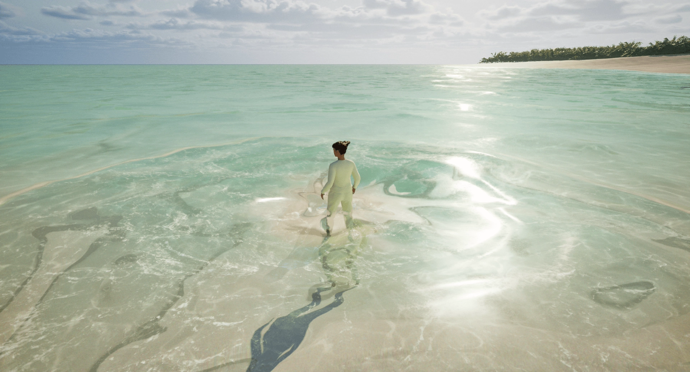

Surf Shack
A shelter shaped by the water it sits beside — every corner rounded away until the volume reads as something the tide left behind.

A shelter shaped by the water it sits beside — every corner rounded away until the volume reads as something the tide left behind.